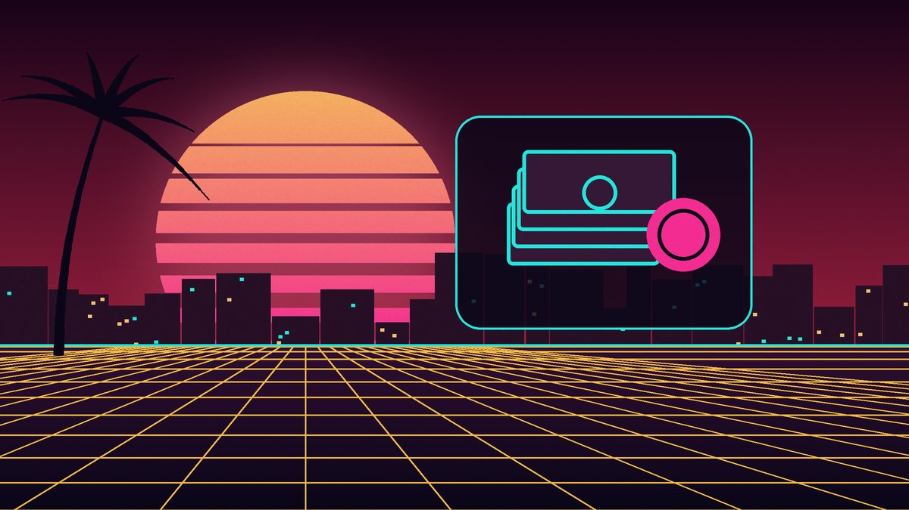

Al acabar el capítulo 1 pierdes casi todo el dinero: así se salva lo que puedas
El dinero del bolsillo, el de la cuenta corriente y el del escondite de casa no llegan al capítulo 2. Solo pasa lo que hayas metido en la cuenta de ahorro familiar, y tiene tope.
Por Redacción Golpe Diario · Publicado el · Actualizado el

Qué ha pasado
La misión «Tourist Trap» marca el final del capítulo 1 y es un punto sin vuelta atrás: al empezarla quedas encerrado en las tres últimas misiones del capítulo. La guía de GTABase detalla lo que se queda por el camino: el dinero que lleves encima, el saldo de la cuenta corriente de BuckMe, el que tengas escondido bajo las tablas del suelo en casa de Jason, la casa de Key Lento y los vehículos personales. Notebookcheck añade que con el coche de Jason desaparecen también las mejoras que le hayas pagado.
Lo que sí cruza al capítulo 2, según la misma guía, es la cuenta de ahorro familiar (Family Savings) hasta 5.000 $, el nivel de relación entre Jason y Lucía y las armas únicas que hayas recogido. Notebookcheck apunta en la misma dirección y señala que las armas, la ropa y los tatuajes se quedan contigo, así que son mejor destino para el dinero que un saldo en el banco. GTABase añade un detalle menor: la forma física de Jason baja al empezar el capítulo 2.
La cuenta de ahorro familiar se abre desde la aplicación BuckMe del móvil después de la misión «Buck Me» y es un bote compartido entre los dos personajes. Tiene una pega gorda: lo que metes ahí no se puede sacar nunca. Por eso GTABase aconseja ingresar solo lo que no vayas a necesitar, mover 5.000 $ antes de empezar «Tourist Trap», gastar el resto en cosas que se conserven y hacer un guardado manual antes de seguir.
Cómo funciona el banco, según esa guía: empiezas sin cuenta, y cuando termina «Buck Me» recibes 100 $ de bienvenida en la cuenta corriente, que puedes pasar a Family Savings con la opción «Buck Yourself» de la app. Se ingresa en cualquier cajero, y la aplicación incluye un buscador del más cercano. Las tiendas aceptan el dinero del bolsillo en compras de hasta 999 $; lo más caro sale solo de la cuenta. El bolsillo admite hasta 20.000 $ por personaje.
Y ojo con el riesgo cotidiano: si te matan o te detienen, pierdes todo el dinero que lleves encima, más una pequeña comisión de mantenimiento de BuckMe, y es probable que también las bolsas de botín que cargues. El dinero del banco no se toca. Family Savings tiene metas: la primera, a 5.000 $ guardados, sube el límite de la cuenta corriente a 15.000 $, y la siguiente, a 10.000 $, lo sube a 100.000 $ y da un 20 % de descuento en trayectos de RydeMe. El resto de metas se abren con la historia.
Qué significa para ti
- Antes de tocar «Tourist Trap», deja el bolsillo y la cuenta corriente a cero: ese dinero no llega al capítulo 2.
- Mete 5.000 $ en la cuenta de ahorro familiar, pero solo lo que no te haga falta durante el resto del capítulo: de ahí no se saca.
- El sobrante, gástalo en armas, ropa y tatuajes. En mejoras del coche de Jason, no: el coche se va con el capítulo.
- No te tires horas haciendo caja al principio pensando en el resto de la partida, porque casi todo se reinicia.
- Ingresa el dinero en un cajero después de cada trabajo y antes de cualquier golpe arriesgado: si te matan o te detienen, lo del bolsillo se pierde.
- Haz un guardado manual antes de la misión, por si quieres volver a gastar con calma.
Lo tienes también en la guía: Cómo ganar dinero en GTA 6 · Trucos y consejos para el modo historia de GTA 6
Contrastado con: GTABase · Notebookcheck
Sigue leyendo
El almacén al este de Hamlet: unos 13.000 dólares y tres armas sin pegar un tiro
Es una nave de South Vice-Dale County, a las afueras de Hamlet, y cuando llegas los que la guardaban ya están muertos. Hay una bolsa con 6.000 dólares en billetes marcados, paquetes de cocaína, tres armas y una carta de coleccionista que en la casa de empeños paga otros 6.000.
Cómo ganar dinero rápido en las primeras horas de GTA 6: lo que de verdad paga
Los medios que ya han jugado coinciden en que asaltar las operaciones ilegales del mapa paga mucho mejor que robar coches en los capítulos 1 y 2. Esta es la lista de métodos, lo que pagan según cada fuente y lo que hay que desbloquear antes.
Si te matan o te detienen pierdes todo el dinero que llevas encima: así se salva
En GTA 6 el dinero vive en dos sitios: el del bolsillo y el de la cuenta del banco. Lo avisó el propio Rob Nelson, de Rockstar, antes del estreno: sin ingresarlo, ese efectivo desaparece en cuanto caes.